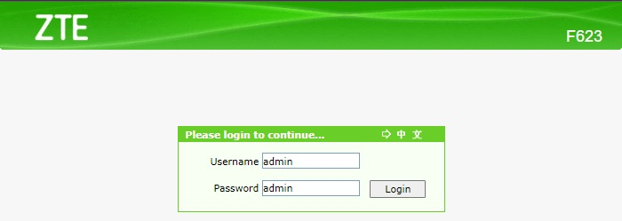
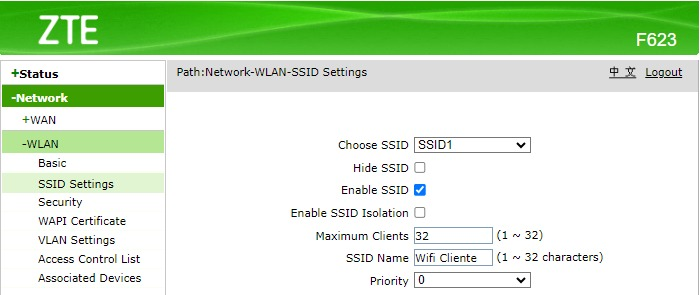
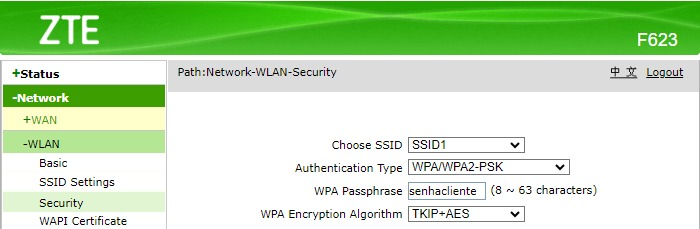
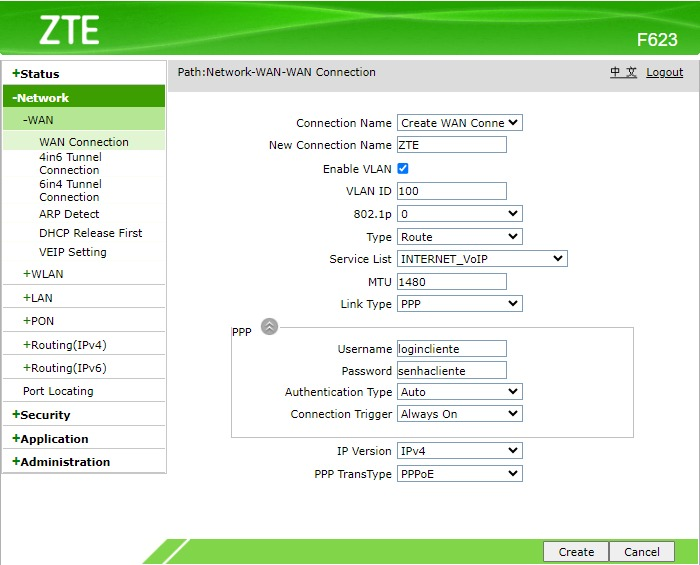
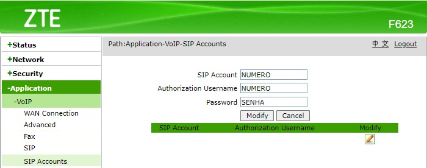
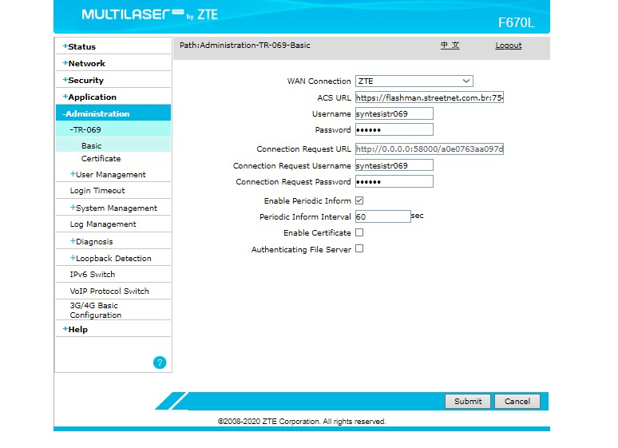
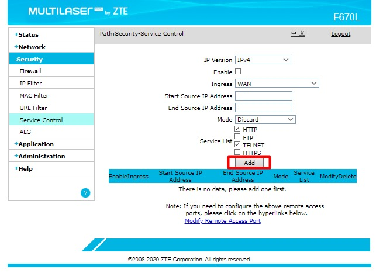

Ip para acesso ao equipamento 192.168.1.1

Configuração do WIFI do cliente.

Configuração da senha do WI-FI do cliente.

Especificar WLAN Settings

Nessa página só coloca o Numero e senha que o NOC passou

Necessário clicar em ADD e depois salvar ( IP do voip : 191.242.104.226)

Depois de ter feito toda essa parte de configuração,vá em (ADMINISTRAÇÃO > TR-069 > BASIC) e preencha da forma que está na imagem abaixo.

Agora vá em SECURITY > SERVICE CONTROL e preencha da mesma forma que está na imagem abaixo. Depois é só clicar em ADD e está configurado o roteador.
